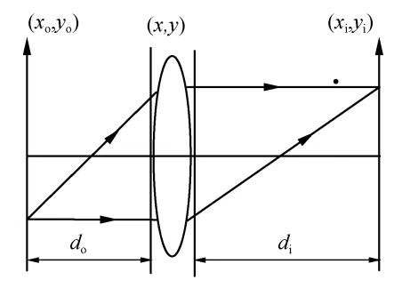

任何平面物场分布都可以看作为无数小面元的组合，而每个小面元都可看作一个加权的\(\delta\)函数.
数学建模过程中，“物”与“光源”是类似的.
用\(delta\)函数表征的是点光源.
对于一个透镜或一个成像系统，若能够清楚知道物平面上任一小面元的光振动通过成像系统后，在像平面上所造成的光振动分布情况，通过线性叠加，原则上便能求得任何物面光场分布通过系统后所形成的像面光场分布，进而求得像面强度分布.
这就是相干照明下的成像过程，关键是求出任意小面元的光振动所对应的像场分布.
研究在相干照明下，一个消像差的正薄透镜对透明物成实像的情况.

如图所示：物体放在透镜前距离为\(d_o\)的输入平面\(x_oy_o\)上，在透镜后距离\(d_i\)的共轭面\(x_iy_i\)上观察成像情况.
[设]紧靠物体后的复振幅分布为：\(U_o(x_o', y_o')\).
[设]\((x_o', y_o')\)点处发出的单位脉冲为\(\delta(x_o-x_o', y_o-y_o')\).
沿光波传播方向，逐面计算三个特定平面上的场分布：
这样就可最终导出一个点源的输入输出关系.
利用Fresnel公式，有：
$$\begin{align} \mathrm{d}U_1(x_o',y_o';x,y) &= \frac{\exp(ikd_0)}{i\lambda d_0}\iint_{-\infty}^{+\infty}\delta(x_o-x_o', y_o-y_o')\exp\left[ik\frac{(x-x_o)^2 + (y-y_o)^2}{2d_o}\right]\mathrm{d}x_o\mathrm{d}y_o\\ &= \frac{\exp(ikd_0)}{i\lambda d_0}\exp\left[ik\frac{(x-x_o')^2 + (y-y_o')^2}{2d_o}\right] \end{align}$$由于\((x_o', y_o')\)是任意的，为书写方便，略去常数相位因子后，上式可写为：
$$\mathrm{d}U_1(x_o, y_o; x, y) = \frac{1}{i\lambda d_0}\exp\left[ik\frac{(x-x_o)^2 + (y-y_o)^2}{2d_o}\right]$$此波通过孔径函数\(P(x,y)\)，焦距为\(f\)的透镜后，复振幅\(\mathrm{d}U_1'(x_o, y_o;x, y)\)为：
$$\mathrm{d}U_1'(x_o, y_o;x,y) = P(x,y)\exp\left(-ik\frac{x^2 + y^2}{2f}\right)\mathrm{d}U_1(x_o, y_o; x, y)$$ $$h(x_o, y_o; x_i, y_i) = \frac{1}{\lambda^2d_od_i}\exp\left[ik\frac{x_o^2 + y_o^2}{2d_o}\right]\exp\left[ik\frac{x_i^2 + y_i^2}{2d_i}\right]\times\iint_{-\infty}^{+\infty}P(x,y)\exp\left\{-ik\left[\left(\frac{x_i}{d_i} + \frac{x_o}{d_o}\right)x + \left(\frac{y_i}{d_i} + \frac{y_o}{d_o}\right)y\right]\right\}\mathrm{d}x\mathrm{d}y$$作以下近似：
$$\exp\left[{i\frac{k}{2d_o}(x_o^2 + y_o^2)}\right]\approx \exp\left[{i\frac{k}{2d_o}\left(\frac{x_i^2 + y_i^2}{M^2}\right)}\right]$$通过近似后的相位因子不再依赖于\((x_o, y_o)\)，因此不会影响\(x_iy_i\)面上的强度分布，于是可以略去，则：
[令]
$$\tilde{x}_o = Mx_o,\quad \tilde{y}_o = My_o$$ $$\begin{align}\therefore h(x_o, y_o; x_i, y_i) &= \frac{1}{\lambda^2d_od_i}\iint_{-\infty}^{+\infty}P(x,y)\exp\left\{-i\frac{2\pi}{\lambda d_i}\left[\left(x_i - \tilde{x}_o\right)x + \left(y_i - \tilde{y}_o\right)y\right]\right\}\mathrm{d}x\mathrm{d}y\\ &= h(x_i - \tilde{x}_o, y_i-\tilde{y}_o) \end{align}$$该式表明：在近轴成像条件下，上式所表征的透镜成像系统是空不变的.
不考虑几何像差，仅考虑衍射限制的系统.
一般的衍射受限系统可由若干共轴球面透镜组成，这些透镜既可以是正透镜，也可以是负透镜，且透镜也不一定是薄的.
任意成像系统都可以分成三部分：